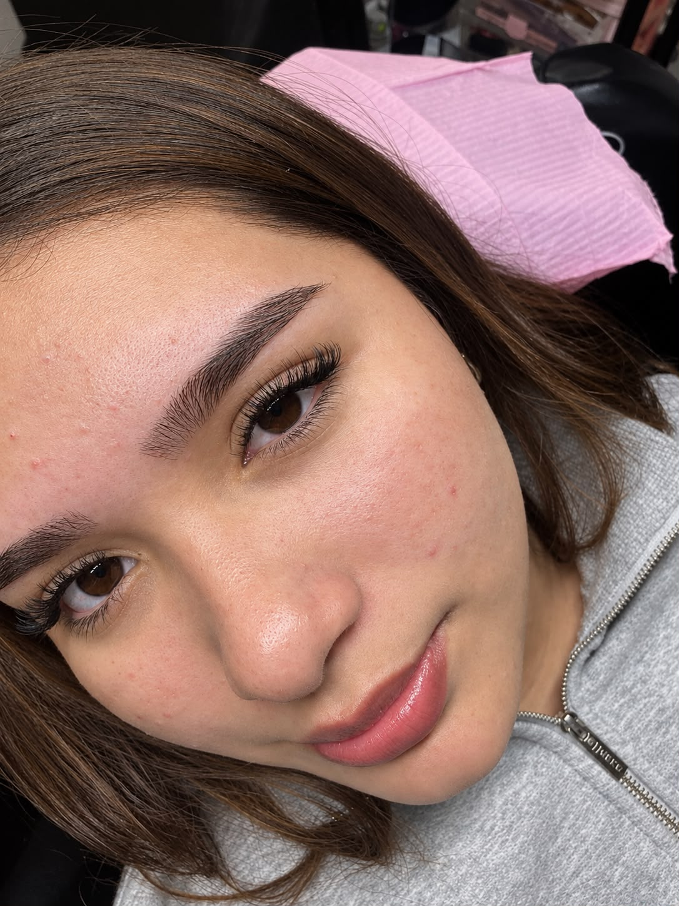

Extensiones & Redes
Procesos Creativos
Aplicación personalizada de extensiones de pestañas, con producción de contenido visual para redes (reels, carruseles, stories) enfocada en captación y fidelización de clientas.
Consultar / Reservar